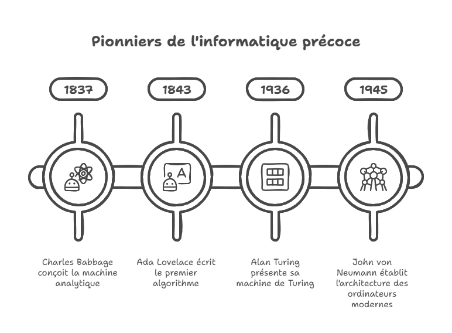
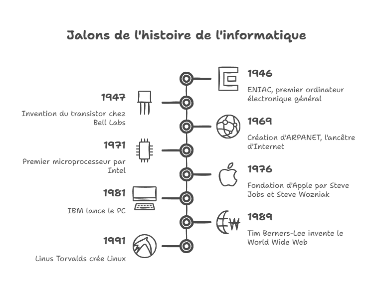

Ressources Pédagogiques
Découvrez des fiches pédagogiques sur la cybersécurité, l'histoire de l'informatique et la programmation, ainsi que des informations sur Jean Prévost et son rôle dans la Résistance.
Ressources Pédagogiques

Archives historiques du lycée Jean Prévost

Chronologie des événements importants
Cette page regroupe une sélection de ressources pédagogiques pour approfondir vos connaissances en informatique et sciences du numérique. Pour plus d'informations sur Jean Prévost et son héritage, consultez notre page Histoire.
Bibliographie
Algorithmique
Architecture des ordinateurs
- G. Dowek, Introduction à la science informatique, RPA, Scérén, CNDP-CRDP (2011)
- G. Dowek et al., Informatique et sciences du numérique, Spécialité ISN en terminale S, Eyrolles (2012)
- C. Timsit et S. Zertal, From transistor to computer: an introduction to the world of computer architecture, Hermann (2013)
Programmation Python
Sitographie
Architecture des ordinateurs
Instructions en ligne de commande
Simulation de portes logiques
Développement Web
Cours
Sites officiels
Validateurs
Programmation Python
Environnement de Développement Intégré (EDI)
- Anaconda (multiplateforme)
- Basthon (en ligne)
- EduPyter (windows)
- EduPython (windows)
- IDLE (multiplateforme)
- Spider (multiplateforme)